library(reshape2) library(dplyr)
library(igraph)
library(tidyr)
library(DT) library(pheatmap) library(ggraph)
## Warning: package 'ggplot2' was built under R version 4.5.2
library(ggplot2) library(ggrepel) library(tidygraph)
library(gplots)
library("ggplot2") library(reshape2) library(RColorBrewer) library(dplyr) library(viridis)
library(ggrepel) library(corrplot)
library(plotly)
library(dplyr) library(ggplot2) library(scales)
library(forcats) library(tidyverse)
## Warning: package 'readr' was built under R version 4.5.2
# Open the graph/network structure data #graph <- read.csv("Infomap_graph.csv", sep =",", header = TRUE, stringsAsFactors = FALSE) #head(graph) # Distributions of Infomap cluster results infomap_clusters <- read.csv("Infomap_clusters_081125.csv", sep =",", header = TRUE, stringsAsFactors = FALSE) head(infomap_clusters)
## Sno Nodes Attributes InfoMap_cluster ## 1 29 b44.128C AD_female 1 ## 2 51 b64.131N AD_female 1 ## 3 52 b36.127N AD_female 1 ## 4 53 b15.130N AD_female 1 ## 5 24 b47.128C AD_male 1 ## 6 7 b51.132C AsymAD_female 1
# Open the Network-based Community detection table infomap_clusters_sds <- read.csv("Infomap_clusters_sds_081125.csv", sep =",", header = TRUE, stringsAsFactors = FALSE) head(infomap_clusters_sds)
## Sno InfoMap_cluster Nodes unique_id Biodomain ## 1 141 1 UP Ap_others_1 + Apoptosis ## 2 143 1 UP Ap_roceaiiap_11 + Apoptosis ## 3 148 1 UP Au_ph_4 + Autophagy ## 4 153 1 UP DR_Ddr_1 + DNA Repair ## 5 165 1 UP En_re_10 + Endolysosome ## 6 167 1 UP En_ri_9 + Endolysosome ## Subdomain ## 1 <NA> ## 2 regulation of cysteine-type endopeptidase activity involved in apoptotic process ## 3 phagocytosis ## 4 DNA damage response ## 5 receptor-mediated endocytosis ## 6 receptor internalization ## Biodomain_Subdomain ## 1 Apoptosis_others ## 2 Apoptosis_regulation_of_cysteine-type_endopeptidase_activity_involved_in_apoptotic_process ## 3 Autophagy_phagocytosis ## 4 DNA_Repair_DNA_damage_response ## 5 Endolysosome_receptor-mediated_endocytosis ## 6 Endolysosome_receptor_internalization ## X X.1 X.2 X.3 X.4 ## 1 NA NA NA NA NA ## 2 NA NA NA NA NA ## 3 NA NA NA NA NA ## 4 NA NA NA NA NA ## 5 NA NA NA NA NA ## 6 NA NA NA NA NA
######################################################################################################################################################### # Define total subject counts for each group total_subjects <- c( "AD_male" = 47, "AD_female" = 128, "AsymAD_male" = 61, "AsymAD_female" = 159 ) # Categorize rows into Attributes (UP, DOWN, AD_male, AD_female, AsymaAD_male and AsymAD_female) infomap_clusters <- infomap_clusters %>% mutate( Category = case_when( Attributes %in% c("UP", "DOWN") ~ Attributes, Attributes %in% c("AD_male", "AD_female", "AsymAD_male", "AsymAD_female") ~ Attributes, TRUE ~ NA_character_ ) ) %>% filter(!is.na(Category)) # Keep only rows with valid categories # Count occurrences of each Category within each InfoMap_cluster summary_infomap_clusters <- infomap_clusters %>% group_by(InfoMap_cluster, Category) %>% summarise(Count = n(), .groups = "drop") # Percent for individuals, count for UP/DOWN summary_infomap_clusters <- summary_infomap_clusters %>% mutate( Value = case_when( Category %in% names(total_subjects) ~ round((Count / total_subjects[Category]) * 100, 1), TRUE ~ as.numeric(Count) ) ) head(summary_infomap_clusters)
## # A tibble: 6 × 4 ## InfoMap_cluster Category Count Value ## <int> <chr> <int> <dbl> ## 1 1 AD_female 4 3.1 ## 2 1 AD_male 1 2.1 ## 3 1 AsymAD_female 8 5 ## 4 1 AsymAD_male 5 8.2 ## 5 1 UP 35 35 ## 6 2 AD_female 1 0.8
######################################################################################################################################################### # Define order status_categories <- c("AD_male", "AD_female", "AsymAD_male", "AsymAD_female") # Biodomain summary biodomain_summary <- infomap_clusters_sds %>% mutate(Direction = ifelse(Nodes == "UP", "UP", "DOWN")) %>% count(InfoMap_cluster, Biodomain, Direction, name = "Count") %>% mutate(Category = Biodomain) %>% pivot_wider(names_from = Direction, values_from = Count, values_fill = 0) %>% mutate( Count = UP + DOWN, NetDirection = case_when( UP > DOWN ~ "UP", DOWN > UP ~ "DOWN", TRUE ~ "Neutral" ) ) %>% filter(NetDirection != "Neutral") %>% select(InfoMap_cluster, Category, Count, Direction = NetDirection) # Merge with original summary original_summary <- summary_infomap_clusters %>% mutate( Direction = case_when( Category %in% status_categories ~ "Status", Category %in% c("UP", "DOWN") ~ "Total", TRUE ~ NA_character_ ), Value = ifelse(Direction == "Status", Value, Count) ) %>% filter(!is.na(Direction)) %>% select(InfoMap_cluster, Category, Value, Direction) # Combine data merged_data <- bind_rows( original_summary, biodomain_summary %>% rename(Value = Count) ) # Define order biodomain_categories <- sort(unique(biodomain_summary$Category)) final_x_order <- c(status_categories, biodomain_categories, "UP", "DOWN") merged_data$Category <- factor(merged_data$Category, levels = final_x_order) merged_data$InfoMap_cluster <- factor(merged_data$InfoMap_cluster, levels = sort(unique(merged_data$InfoMap_cluster), decreasing = TRUE)) # Custom fill color using improved gradients merged_data <- merged_data %>% mutate( fill_color = case_when( Direction == "Status" ~ col_numeric(c("white", "purple"), domain = NULL)(Value), Direction == "UP" ~ col_numeric(c("#e6f5e6", "#006400"), domain = NULL)(Value), Direction == "DOWN" ~ col_numeric(c("#ffe5e5", "#8B0000"), domain = NULL)(Value), TRUE ~ "grey90" ) ) # Plot ggplot(merged_data, aes(x = Category, y = InfoMap_cluster)) + geom_tile(aes(fill = fill_color), color = "white", linewidth = 0.4) + # Cell border geom_text(aes(label = round(Value, 1)), size = 5) + scale_fill_identity() + scale_y_discrete(name = "InfoMap Cluster") + scale_x_discrete(name = "Category", position = "top") + # Add horizontal lines between rows (row borders) geom_hline(yintercept = seq(1.5, length(unique(merged_data$InfoMap_cluster)) + 0.5, by = 1), color = "gray", linewidth = 0.5) + # Add column borders geom_vline(xintercept = seq(1.5, length(unique(merged_data$Category)) + 0.5, by = 1), color = "gray", linewidth = 0.5) + theme_minimal(base_size = 18) + theme( axis.text.x = element_text(angle = 45, hjust = 0), panel.grid = element_blank() ) + labs(title = "Enhanced Cluster-wise Heatmap: Status %, Biodomain Direction & Total Counts")
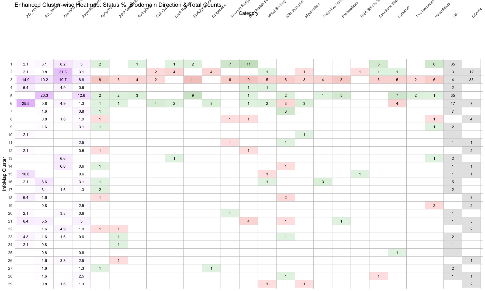
######################################################################################################################################################### # Filter by Status - individual count in each cluster for each catagory > 5%) # Step 1: Identify eligible clusters #eligible_clusters <- merged_data %>% #filter(Category %in% status_categories, Value > 5) %>% #pull(InfoMap_cluster) %>% #unique() # Step 2: Filter merged_data for eligible clusters only #filtered_data <- merged_data %>% #filter(InfoMap_cluster %in% eligible_clusters) # Step 3: Reorder levels to match filtered data #filtered_data$Category <- factor(filtered_data$Category, levels = final_x_order) #filtered_data$InfoMap_cluster <- factor( #filtered_data$InfoMap_cluster, #levels = sort(unique(filtered_data$InfoMap_cluster)) # ascending: Cluster 1 at top #) # manually define clusters of interest selected_clusters <- c(1, 2, 3, 4, 5, 6, 15, 16, 21) # filter merged_data to keep only those clusters filtered_data <- merged_data %>% filter(InfoMap_cluster %in% selected_clusters) # Step 4: Plot ggplot(filtered_data, aes(x = Category, y = InfoMap_cluster)) + geom_tile(aes(fill = fill_color), color = "white", linewidth = 0.4) + geom_text(aes(label = round(Value, 1)), size = 5) + scale_fill_identity() + scale_y_discrete(name = "InfoMap Cluster") + scale_x_discrete(name = "Category", position = "top") + # moved labels to top # Add horizontal lines between rows (row borders) geom_hline(yintercept = seq(1.5, length(unique(filtered_data$InfoMap_cluster)) + 0.5, by = 1), color = "gray", linewidth = 0.5) + # Add column borders geom_vline(xintercept = seq(1.5, length(unique(filtered_data$Category)) + 0.5, by = 1), color = "gray", linewidth = 0.5) + theme_minimal(base_size = 18) + theme( axis.text.x = element_text(angle = 45, hjust = 0), panel.grid = element_blank() ) + labs(title = "Filtered Clusters with individual count in each cluster > 10%")

######################################################################################################################################################### # Create a color mapping long_data <- summary_infomap_clusters %>% mutate( FillType = case_when( Category == "UP" ~ "UP", Category == "DOWN" ~ "DOWN", TRUE ~ "Percent" ), FillColor = case_when( Category == "UP" ~ "green", Category == "DOWN" ~ "red", TRUE ~ scales::col_numeric( palette = c("white", "steelblue"), domain = c(0, 100) )(Value) ), Label = if_else(FillType == "Percent", paste0(round(Value, 1), "%"), as.character(Value)), InfoMap_cluster = factor(InfoMap_cluster, levels = sort(unique(InfoMap_cluster), decreasing = TRUE)) # Reverse order ) # Plot ggplot(long_data, aes(x = Category, y = InfoMap_cluster)) + geom_tile(aes(fill = FillColor), color = "white", linewidth = 0.5) + geom_text(aes(label = Label), size = 4, color = "black") + scale_fill_identity() + labs( title = "Cluster-wise Distribution of UP/DOWN Counts and Subject Category Percentages", x = "Category", y = "InfoMap Cluster" ) + theme_minimal(base_size = 14) + theme( axis.text.x = element_text(angle = 45, hjust = 1), strip.text = element_text(size = 14), legend.position = "none" )
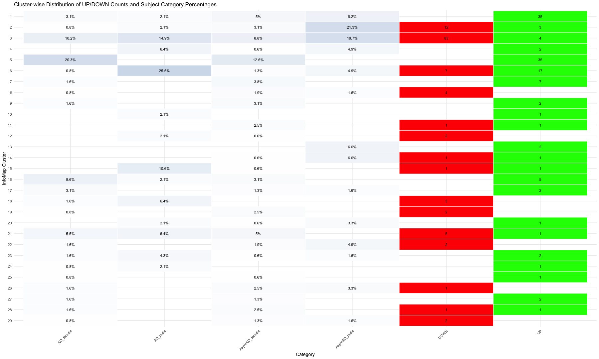
######################################################################################################################################################### ######################################################################################################################################################### # Network diagram with highlighted the clusters # Open the graph/network structure data #graph <- read.csv("Infomap_graph.csv", sep =",", header = TRUE, stringsAsFactors = FALSE) graph <- read.csv("Infomap_graph_081125.csv", sep =",", header = TRUE, stringsAsFactors = FALSE) head(graph)
## Sno Node1 Unique_ID Biodomain ## 1 1 LM_gmp_6 + LM_gmp_6 Lipid_Metabolism ## 2 2 SS_mpod_6 + SS_mpod_6 Structural_Stabilization ## 3 3 MBaH_oaaomi_5 + MBaH_oaaomi_5 Metal_Binding_and_Homeostasis ## 4 4 MBaH_romit_6 + MBaH_romit_6 Metal_Binding_and_Homeostasis ## 5 5 MBaH_romit_6 + MBaH_romit_6 Metal_Binding_and_Homeostasis ## 6 6 MBaH_romit_6 + MBaH_romit_6 Metal_Binding_and_Homeostasis ## Subdomain ## 1 glycolipid_metabolic_process ## 2 microtubule_polymerization_or_depolymerization ## 3 oxidoreductase_activity,_acting_on_metal_ions ## 4 regulation_of_metal_ion_transport ## 5 regulation_of_metal_ion_transport ## 6 regulation_of_metal_ion_transport ## Biodomain_Subdomain ## 1 Lipid_Metabolism_glycolipid_metabolic_process ## 2 Structural_Stabilization_microtubule_polymerization_or_depolymerization ## 3 Metal_Binding_and_Homeostasis_oxidoreductase_activity,_acting_on_metal_ions ## 4 Metal_Binding_and_Homeostasis_regulation_of_metal_ion_transport ## 5 Metal_Binding_and_Homeostasis_regulation_of_metal_ion_transport ## 6 Metal_Binding_and_Homeostasis_regulation_of_metal_ion_transport ## Interaction IDs Status Node2 ## 1 PP b63.132N AsymAD_male AsymAD_M_2 ## 2 PP b54.129N AsymAD_male AsymAD_M_13 ## 3 PP b52.128N AsymAD_male AsymAD_M_24 ## 4 PP b62.130C AsymAD_male AsymAD_M_8 ## 5 PP b58.127C AsymAD_male AsymAD_M_31 ## 6 PP b11.128C AsymAD_male AsymAD_M_5
# Open the graph/network attributes data #attributes <- read.csv("Infomap_graph_attributes.csv", sep =",", header = TRUE, stringsAsFactors = FALSE) attributes <- read.csv("Infomap_graph_attributes_081125.csv", sep =",", header = TRUE, stringsAsFactors = FALSE) head(attributes)
## Nodes Attributes InfoMap_cluster ## 1 AD_F_4 AD_female 1 ## 2 AD_F_3 AD_female 1 ## 3 AD_F_2 AD_female 1 ## 4 AD_F_1 AD_female 1 ## 5 AD_M_1 AD_male 1 ## 6 AsymAD_F_8 AsymAD_female 1
######################################################################################################################################################### # 1. Prepare edge list edges <- graph %>% rename(from = Node1, to = Node2) %>% select(from, to) # 2. Create node list from unique nodes in edges edge_nodes <- unique(c(edges$from, edges$to)) %>% tibble(name = .) # 3. Prepare attribute data attributes_clean <- attributes %>% rename(name = Nodes) %>% select(name, Attributes, InfoMap_cluster) # 4. Merge to form complete node metadata nodes <- edge_nodes %>% left_join(attributes_clean, by = "name") %>% mutate( Attr = replace_na(Attributes, "Unassigned"), InfomapCluster = as.integer(InfoMap_cluster), NodeShape = case_when( Attr %in% c("UP", "DOWN") ~ "AD Subdomain", Attr %in% c("AD_male", "AD_female", "AsymAD_male", "AsymAD_female") ~ "AD Subject", TRUE ~ "circle" ) ) # 5. Create zero-padded cluster labels unique_clusters <- sort(unique(nodes$InfomapCluster[!is.na(nodes$InfomapCluster)])) ordered_labels <- sprintf("Cluster %02d", unique_clusters) nodes <- nodes %>% mutate( ClusterLabel = sprintf("Cluster %02d", InfomapCluster), ClusterLabel = factor(ClusterLabel, levels = ordered_labels) ) # 6. Define shape and color mappings shape_map <- c( "AD Subdomain" = 15, # square "AD Subject" = 16 # circle ) attr_colors <- c( "UP" = "seagreen1", "DOWN" = "thistle1", "AD_male" = "mediumblue", "AD_female" = "tomato", "AsymAD_male" = "dodgerblue", "AsymAD_female" = "coral", "Unassigned" = "gray70" ) # 7. Create graph g <- graph_from_data_frame(d = edges, vertices = nodes, directed = FALSE) # 8. Plot graph ggraph(g, layout = "graphopt") + geom_edge_link(alpha = 0.2, color = "gray60") + geom_node_point(aes(color = Attr, shape = NodeShape), size = 4, alpha = 0.9) + # <--- added shape aesthetic geom_node_text(aes(label = name), size = 4, repel = TRUE, alpha = 0.6) + scale_color_manual(values = attr_colors) + scale_shape_manual(values = shape_map) + facet_nodes(~ ClusterLabel) + theme_graph(base_size = 16) + theme( legend.position = "bottom", strip.text = element_text(size = 16) ) + labs( title = "Network Clusters by InfoMap", subtitle = "Nodes colored by Attribute | Faceted by Cluster", shape = "Node Shape" )
## Warning: ggrepel: 44 unlabeled data points (too many overlaps). Consider ## increasing max.overlaps
## Warning: ggrepel: 12 unlabeled data points (too many overlaps). Consider ## increasing max.overlaps
## Warning: ggrepel: 31 unlabeled data points (too many overlaps). Consider ## increasing max.overlaps
## Warning: ggrepel: 128 unlabeled data points (too many overlaps). Consider ## increasing max.overlaps
## Warning: ggrepel: 12 unlabeled data points (too many overlaps). Consider ## increasing max.overlaps
## Warning: ggrepel: 18 unlabeled data points (too many overlaps). Consider ## increasing max.overlaps
## Warning: ggrepel: 66 unlabeled data points (too many overlaps). Consider ## increasing max.overlaps
## Warning: ggrepel: 38 unlabeled data points (too many overlaps). Consider ## increasing max.overlaps
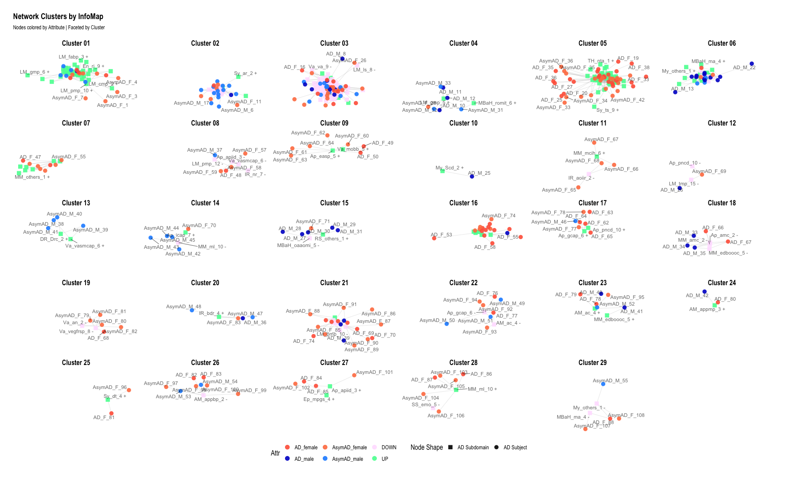
######################################################################################################################################################### # 1. Select clusters of interest selected_clusters <- c(1, 2, 3, 4, 5, 6, 15, 16, 21) # Zero-padded labels like "Cluster 01", "Cluster 02", etc. ordered_labels <- sprintf("Cluster %02d", selected_clusters) # 5. Merge with edge node list nodes <- edge_nodes %>% left_join(attributes_clean, by = "name") %>% mutate( Attr = replace_na(Attributes, "Unassigned"), InfomapCluster = as.integer(InfoMap_cluster) ) %>% filter(InfomapCluster %in% selected_clusters) %>% # Filter clusters mutate( ClusterLabel = sprintf("Cluster %02d", InfomapCluster), ClusterLabel = factor(ClusterLabel, levels = ordered_labels) ) %>% mutate(NodeShape = case_when( Attr %in% c("UP", "DOWN") ~ "AD Subdomain", Attr %in% c("AD_male", "AD_female", "AsymAD_male", "AsymAD_female") ~ "AD Subject", TRUE ~ "circle" # fallback for Unassigned or others )) # 7. Filter edges to only those between selected nodes edges_filtered <- edges %>% filter(from %in% nodes$name & to %in% nodes$name) # 8. Create graph g <- graph_from_data_frame(d = edges_filtered, vertices = nodes, directed = FALSE) # 9. Plot ggraph(g, layout = "graphopt") + geom_edge_link(alpha = 0.2, color = "gray60") + geom_node_point(aes(color = Attr, shape = NodeShape), size = 4, alpha = 0.9) + geom_node_text(aes(label = name), size = 4, repel = TRUE, alpha = 0.6) + scale_color_manual(values = attr_colors) + scale_shape_manual(values = shape_map) + facet_nodes(~ ClusterLabel, ncol = 3) + # Respects selected and ordered clusters theme_graph(base_size = 16) + theme( legend.position = "bottom", strip.text = element_text(size = 16) ) + labs( title = "Selected InfoMap Clusters", subtitle = "Clusters: selected 10 | Colored by Attribute" )
## Warning: ggrepel: 39 unlabeled data points (too many overlaps). Consider ## increasing max.overlaps
## Warning: ggrepel: 28 unlabeled data points (too many overlaps). Consider ## increasing max.overlaps
## Warning: ggrepel: 57 unlabeled data points (too many overlaps). Consider ## increasing max.overlaps
## Warning: ggrepel: 10 unlabeled data points (too many overlaps). Consider ## increasing max.overlaps
## Warning: ggrepel: 116 unlabeled data points (too many overlaps). Consider ## increasing max.overlaps
## Warning: ggrepel: 30 unlabeled data points (too many overlaps). Consider ## increasing max.overlaps
## Warning: ggrepel: 1 unlabeled data points (too many overlaps). Consider ## increasing max.overlaps
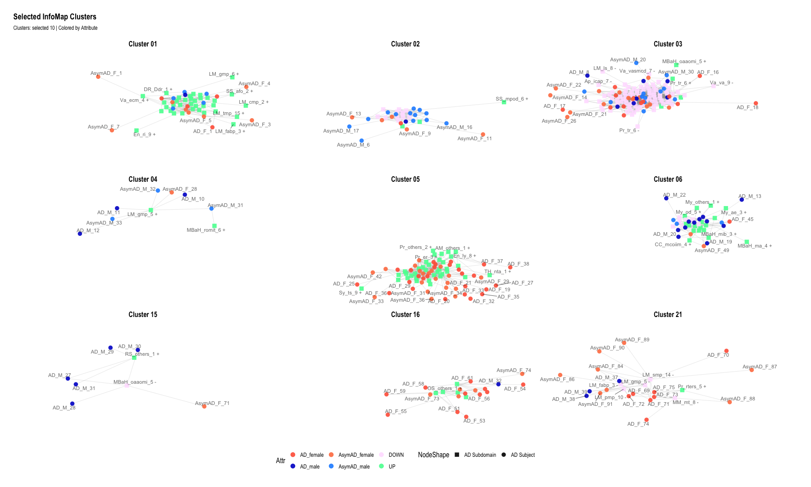
######################################################################################################################################################### ######################################################################################################################################################### # Boxplots of Clinical and Pathological Measures by Cluster library(ggplot2) library(dplyr) library(tidyr) library(rstatix) # cleaner statistical output
#data <- read.csv("Infomap_clusters_with_clinicalParameters.csv", sep =",", header = TRUE, stringsAsFactors = FALSE) data <- read.csv("Infomap_clusters_with_clinicalParameters_082525.csv", sep =",", header = TRUE, stringsAsFactors = FALSE) head(data)
## Sno Sample_ID Status Infomap_cluster age_death PMI APOE4 BRAAK ## 1 1 b44.128C AD_female 1 90.00000 8.450000 0 5 ## 2 2 b64.131N AD_female 1 82.40383 6.500000 1 5 ## 3 3 b36.127N AD_female 1 90.00000 9.500000 0 3 ## 4 4 b15.130N AD_female 1 87.93000 19.580000 0 5 ## 5 89 b47.128C AD_male 1 80.21000 26.500000 1 3 ## 6 131 b51.132C AsymAD_female 1 90.00000 4.183333 1 4 ## CERAD MMSE ## 1 1 4.00000 ## 2 1 22.00000 ## 3 2 21.81818 ## 4 1 0.00000 ## 5 2 23.00000 ## 6 3 29.00000
# Step 1: Pivot data to long format from age_death onward data_long <- data %>% pivot_longer( cols = age_death:MMSE, # Select columns to plot names_to = "Variable", values_to = "Value" ) # Step 2: Convert columns to factors (if needed) data_long$Infomap_cluster <- factor(data_long$Infomap_cluster) data_long$Status <- factor(data_long$Status) # Step 3:Define custom colors custom_colors <- c( "AD_male" = "mediumblue", "AD_female" = "red", "AsymAD_male" = "dodgerblue", "AsymAD_female" = "coral" ) # Step 4: Plot ggplot(data_long, aes(x = Infomap_cluster, y = Value)) + geom_violin(fill = "gray90", color = "black", alpha = 0.4, width = 0.8) + # violin instead of boxplot geom_jitter(aes(color = Status), position = position_jitter(width = 0.2), size = 1.8, alpha = 0.8) + facet_wrap(~ Variable, scales = "free_y", ncol = 2) + labs( title = "Violin Plots of Clinical and Pathological Measures by Cluster", x = "Infomap Cluster", y = "Value" ) + theme_minimal(base_size = 28) + theme( legend.position = "bottom", strip.text = element_text(face = "bold") ) + scale_color_manual(values = custom_colors)
## Warning: Removed 4 rows containing non-finite outside the scale range ## (`stat_ydensity()`).
## Warning: Removed 4 rows containing missing values or values outside the scale range ## (`geom_point()`).
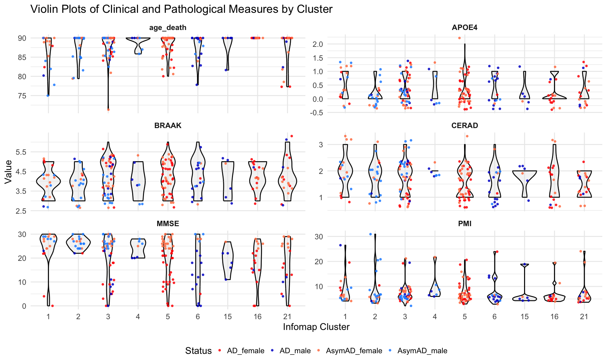
######################################################################################################################################################### #Pairwise Comparisons Between Clusters # Prepare data if not already done data_long <- data %>% pivot_longer( cols = age_death:MMSE, names_to = "Variable", values_to = "Value" ) %>% mutate( Infomap_cluster = factor(Infomap_cluster), Status = factor(Status) ) # Step 1: Run pairwise Wilcoxon for all variables pairwise_results <- data_long %>% drop_na(Value, Infomap_cluster) %>% group_by(Variable) %>% group_modify(~ { tryCatch( { res <- pairwise_wilcox_test(.x, Value ~ Infomap_cluster, p.adjust.method = "fdr") res$Variable <- unique(.x$Variable) # tag results with variable name res }, error = function(e) { # return a placeholder row with NA if test fails tibble( group1 = NA, group2 = NA, p = NA, p.adj = NA, p.adj.signif = NA, Variable = unique(.x$Variable) ) } ) }) %>% ungroup()
## Warning: Unknown or uninitialised column: `Variable`.
## Warning: Unknown or uninitialised column: `Variable`. ## Unknown or uninitialised column: `Variable`. ## Unknown or uninitialised column: `Variable`. ## Unknown or uninitialised column: `Variable`. ## Unknown or uninitialised column: `Variable`.
# Step 2: Filter significant results (if any) significant_results <- pairwise_results %>% filter(!is.na(p.adj) & p.adj < 0.05) # Step 3: Print significant comparisons print(significant_results)
## # A tibble: 11 × 10 ## Variable .y. group1 group2 n1 n2 statistic p p.adj p.adj.signif ## <chr> <chr> <chr> <chr> <int> <int> <dbl> <dbl> <dbl> <chr> ## 1 MMSE Value 1 16 18 17 238. 5 e-3 0.035 * ## 2 MMSE Value 2 5 20 46 686. 2 e-3 0.028 * ## 3 MMSE Value 2 6 20 18 276. 5 e-3 0.035 * ## 4 MMSE Value 2 15 20 6 107 4 e-3 0.035 * ## 5 MMSE Value 2 16 20 17 287 3.6 e-4 0.013 * ## 6 age_dea… Value 1 16 18 17 51 7.57e-5 0.001 ** ## 7 age_dea… Value 2 16 20 17 85 9.92e-4 0.007 ** ## 8 age_dea… Value 3 16 46 17 196. 4.65e-4 0.004 ** ## 9 age_dea… Value 5 16 46 17 196. 4.65e-4 0.004 ** ## 10 age_dea… Value 6 16 18 17 51 7.57e-5 0.001 ** ## 11 age_dea… Value 16 21 17 18 212. 5 e-3 0.032 *
write.table(pairwise_results,"Clinical_and_Pathological_Measures_by_Cluster.txt",sep="\t",quote=F) ######################################################################################################################################################### # Step 1: Prepare data heat_data <- pairwise_results %>% mutate( group1 = factor(as.numeric(as.character(group1))), group2 = factor(as.numeric(as.character(group2))), p_display = ifelse(p < 0.05, p, NA), # show only p < 0.05 in gradient label = ifelse(p.adj < 0.05, "*", "") ) # Define group order ordered_levels <- sort(unique(c(as.numeric(as.character(heat_data$group1)), as.numeric(as.character(heat_data$group2))))) heat_data$group1 <- factor(heat_data$group1, levels = ordered_levels) heat_data$group2 <- factor(heat_data$group2, levels = ordered_levels) # Step 2: Plot ggplot(heat_data, aes(x = group1, y = group2, fill = p_display)) + geom_tile(color = "white") + geom_text(aes(label = label), color = "white", size = 8) + facet_wrap(~ Variable, scales = "free", ncol = 2) + scale_fill_gradient( name = "p < 0.05", low = "#08306b", high = "#deebf7", na.value = "gray90" # p >= 0.05 will appear gray ) + labs( title = "Significant Pairwise Comparisons Between Clusters", x = "Group 1", y = "Group 2" ) + theme_minimal(base_size = 28) + theme( axis.text.x = element_text(angle = 45, hjust = 1), strip.text = element_text(face = "bold") )
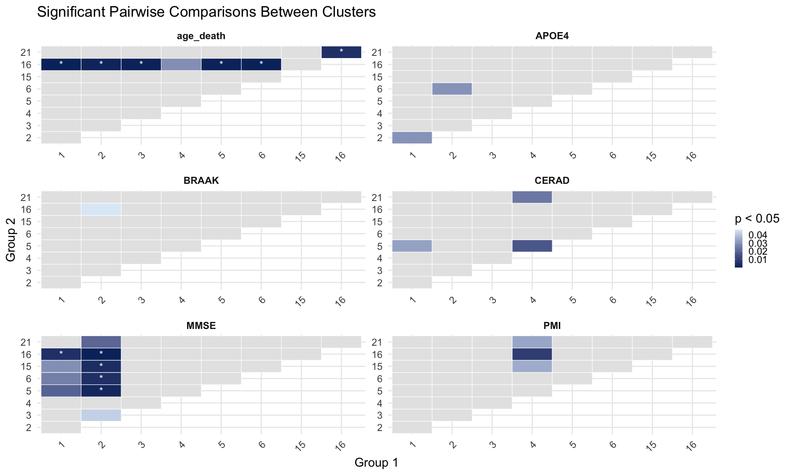
######################################################################################################################################################### ######################################################################################################################################################### # Selct the clusters for ploting (change according to criteria) #selected_clusters <- c(1, 3, 4, 6, 11, 12, 15, 18) # Create a subset of original file #infomap_clusters <- infomap_clusters %>% #filter(InfoMap_cluster %in% selected_clusters) # Categorize rows into Attributes (UP, DOWN, AD_male, AD_female, AsymaAD_male and AsymAD_female) infomap_clusters <- infomap_clusters %>% mutate( Category = case_when( Attributes %in% c("UP", "DOWN") ~ Attributes, Attributes %in% c("AD_male", "AD_female", "AsymAD_male", "AsymAD_female") ~ Attributes, TRUE ~ NA_character_ ) ) %>% filter(!is.na(Category)) # Keep only rows with valid categories # Assign negative values to DOWN counts infomap_clusters <- infomap_clusters %>% mutate( Value = case_when( Category == "DOWN" ~ -1, TRUE ~ 1 ) ) # Count occurrences of each Category within each InfoMap_cluster summary_infomap_clusters <- infomap_clusters %>% group_by(InfoMap_cluster, Category) %>% summarise(Count = n(), .groups = "drop") # Set factor levels for ordered categories summary_infomap_clusters$Category <- factor(summary_infomap_clusters$Category, levels = c("UP", "DOWN", "AD_male", "AD_female", "AsymAD_male", "AsymAD_female")) # Custom colors for the bars custom_colors <- c("UP" = "darkgreen", "DOWN" = "red", "AD_male" = "mediumblue", "AD_female" = "tomato", "AsymAD_male" = "dodgerblue", "AsymAD_female" = "coral") # Create the bar plot ggplot(summary_infomap_clusters, aes(x = Category, y = ifelse(Category == "DOWN", -Count, Count), fill = Category)) + geom_bar(stat = "identity", width = 0.6, position = position_dodge(width = 0.9)) + geom_text( aes(label = abs(Count)), vjust = 0.5, # Center the text vertically within the bar size = 5, position = position_dodge(width = 0.9) ) + facet_wrap(~ InfoMap_cluster, ncol = 4, scales = "free_y") + # Adjust `ncol` for desired layout labs( title = "Distribution of Subdomains (UP and DOWN), AD and AsymAD (Male and Female) by InfoMap Cluster", x = "Attributes", y = "Count", fill = "Category" ) + theme_minimal(base_size = 14) + scale_fill_manual(values = custom_colors) + # Apply custom colors theme( text = element_text(size = 18), axis.text.x = element_text(size = 14, angle = 45, hjust = 1), axis.title = element_text(size = 14), strip.text = element_text(size = 14) ) + geom_hline(yintercept = 0, linetype = "dashed", color = "black")
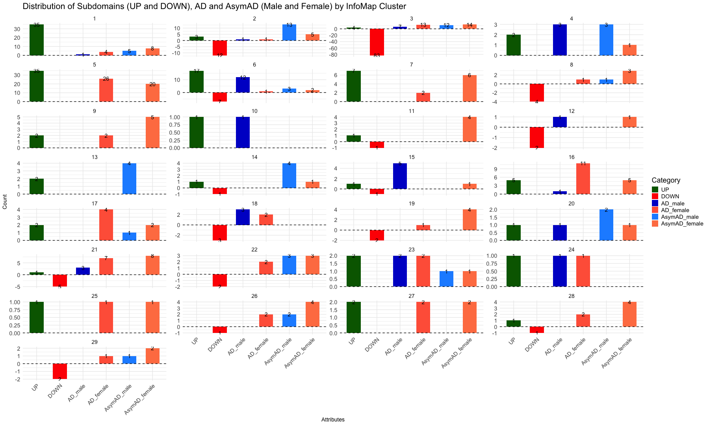
######################################################################################################################################################### # Aggregate UP and DOWN counts per cluster up_down_counts <- summary_infomap_clusters %>% filter(Category %in% c("UP", "DOWN")) %>% group_by(InfoMap_cluster) %>% summarise(Total_UP_DOWN = sum(Count), .groups = "drop") # Step 2: Identify clusters where UP + DOWN >= 5 clusters_to_keep <- up_down_counts %>% filter(Total_UP_DOWN >= 5) %>% pull(InfoMap_cluster) %>% unique() # Step 3: Filter summary data to keep only those clusters but include all categories filtered_summary_infomap_clusters <- summary_infomap_clusters %>% filter(InfoMap_cluster %in% clusters_to_keep) # Step 4: Plot the data ggplot(filtered_summary_infomap_clusters, aes(x = Category, y = ifelse(Category == "DOWN", -Count, Count), fill = Category)) + geom_bar(stat = "identity", width = 0.6, position = position_dodge(width = 0.9)) + geom_text( aes(label = abs(Count)), vjust = 0.5, # Center the text vertically within the bar size = 6, position = position_dodge(width = 0.9) ) + facet_wrap(~ InfoMap_cluster, ncol = 3, scales = "free_y") + # Adjust `ncol` for desired layout labs( title = "Distribution of Subdomains (UP + DOWN ≥ 5) & Other Attributes by InfoMap Cluster", x = "Attributes", y = "Count", fill = "Category" ) + theme_minimal(base_size = 14) + scale_fill_manual(values = custom_colors) + # Apply custom colors theme( text = element_text(size = 14), axis.text.x = element_text(size = 14, angle = 45, hjust = 1), axis.title = element_text(size = 14), strip.text = element_text(size = 14) ) + geom_hline(yintercept = 0, linetype = "dashed", color = "black")
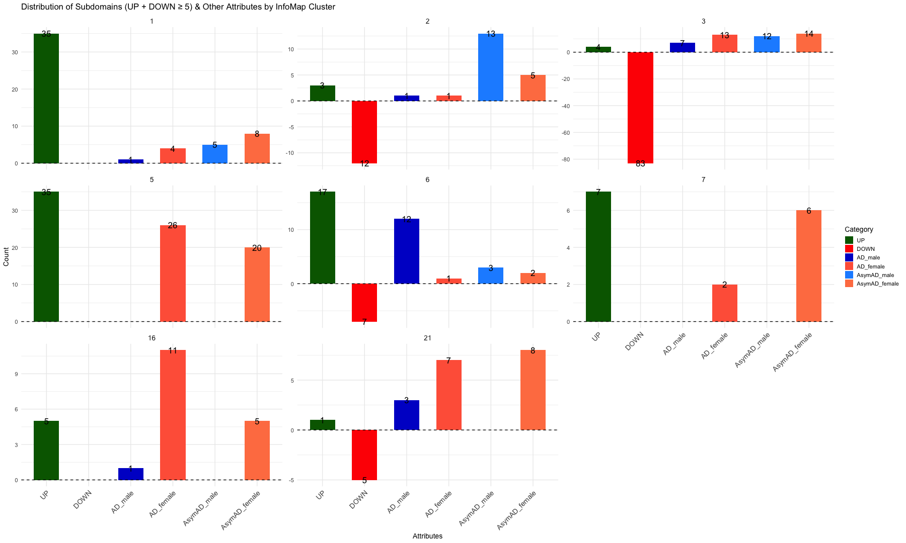
######################################################################################################################################################### # Aggregate individual counts per cluster ind_counts <- summary_infomap_clusters %>% filter(Category %in% c("AD_male", "AD_female", "AsymAD_male", "AsymAD_female")) %>% group_by(InfoMap_cluster) %>% summarise(Total_ind = sum(Count), .groups = "drop") # Step 2: Identify clusters where individuals >= 3 clusters_to_keep <- ind_counts %>% filter(Total_ind >= 3) %>% pull(InfoMap_cluster) %>% unique() # Step 3: Filter summary data to keep only those clusters but include all categories filtered_summary_infomap_clusters <- summary_infomap_clusters %>% filter(InfoMap_cluster %in% clusters_to_keep) ggplot(filtered_summary_infomap_clusters, aes(x = Category, y = ifelse(Category == "DOWN", -Count, Count), fill = Category)) + geom_bar(stat = "identity", width = 0.6, position = position_dodge(width = 0.9)) + geom_text( aes(label = abs(Count)), vjust = 0.5, # Center the text vertically within the bar size = 5, position = position_dodge(width = 0.9) ) + facet_wrap(~ InfoMap_cluster, ncol = 3, scales = "free_y") + # Adjust `ncol` for desired layout labs( title = "Distribution of Subdomains (total individuals ≥ 3) & Other Attributes by InfoMap Cluster", x = "Attributes", y = "Count", fill = "Category" ) + theme_minimal(base_size = 14) + scale_fill_manual(values = custom_colors) + # Apply custom colors theme( text = element_text(size = 14), axis.text.x = element_text(size = 14, angle = 45, hjust = 1), axis.title = element_text(size = 14), strip.text = element_text(size = 14) ) + geom_hline(yintercept = 0, linetype = "dashed", color = "black")
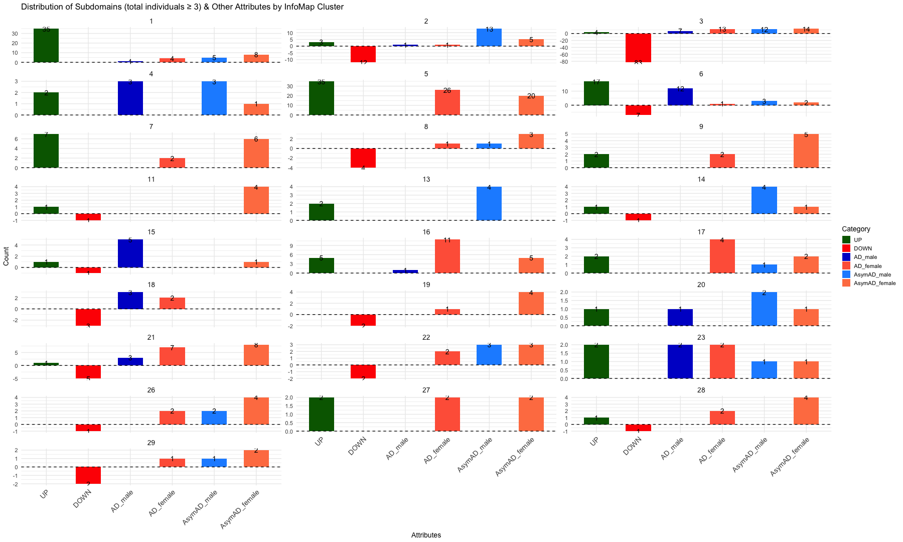
######################################################################################################################################################### ######################################################################################################################################################### # Biodomain/Subdomain Counts by Community (Infomap Clusters) # Define the Biodomain colors custom_colors <- c("Apoptosis" = "#673399", "APP Metabolism" = "#fe6500", "Autophagy" = "#9931fd", "Cell Cycle" = "#18857f", "DNA Repair" = "#f451ad", "Endolysosome" = "#3466cc", "Epigenetic" = "#cb3233", "Immune Response" = "#9ccdcc", "Lipid Metabolism" = "#989898", "Metal Binding and Homeostasis" = "#4b0d20", "Mitochondrial Metabolism" = "#97cb98", "Myelination" = "#996735", "Oxidative Stress" = "#ffcd66", "Proteostasis" = "#c8b269", "RNA Spliceosome" = "#0c9aff", "Structural Stabilization" = "#ff9a9a", "Synapse" = "#329a33", "Tau Homeostasis" = "#cb97cb", "Vasculature" = "#cecd02", "none" = "#7f7f7f") # Open the Network-based Community detection table #infomap_clusters_sds <- read.csv("Infomap_clusters_sds.csv", sep =",", header = TRUE, stringsAsFactors = FALSE) infomap_clusters_sds <- read.csv("Infomap_clusters_sds_081125.csv", sep =",", header = TRUE, stringsAsFactors = FALSE) head(infomap_clusters_sds)
## Sno InfoMap_cluster Nodes unique_id Biodomain ## 1 141 1 UP Ap_others_1 + Apoptosis ## 2 143 1 UP Ap_roceaiiap_11 + Apoptosis ## 3 148 1 UP Au_ph_4 + Autophagy ## 4 153 1 UP DR_Ddr_1 + DNA Repair ## 5 165 1 UP En_re_10 + Endolysosome ## 6 167 1 UP En_ri_9 + Endolysosome ## Subdomain ## 1 <NA> ## 2 regulation of cysteine-type endopeptidase activity involved in apoptotic process ## 3 phagocytosis ## 4 DNA damage response ## 5 receptor-mediated endocytosis ## 6 receptor internalization ## Biodomain_Subdomain ## 1 Apoptosis_others ## 2 Apoptosis_regulation_of_cysteine-type_endopeptidase_activity_involved_in_apoptotic_process ## 3 Autophagy_phagocytosis ## 4 DNA_Repair_DNA_damage_response ## 5 Endolysosome_receptor-mediated_endocytosis ## 6 Endolysosome_receptor_internalization ## X X.1 X.2 X.3 X.4 ## 1 NA NA NA NA NA ## 2 NA NA NA NA NA ## 3 NA NA NA NA NA ## 4 NA NA NA NA NA ## 5 NA NA NA NA NA ## 6 NA NA NA NA NA
# Selct the clusters for ploting (change according to criteria) #selected_clusters <- c(1, 3, 4, 6, 11, 12, 15, 18) # Create a subset of original file #infomap_clusters_sds <- infomap_clusters_sds %>% #filter(InfoMap_cluster %in% selected_clusters) # Plot the data as bar graph for each cluster ggplot(infomap_clusters_sds, aes(x = Biodomain)) + geom_bar(aes(fill = Biodomain)) + # Bar plot with fill by Biodomain labs(title = "Count of Biodomains by Infomap Clusters", x = "Biodomain", y = "Count") + facet_wrap(~InfoMap_cluster, ncol = 4, scales = "free_y") + # Facet based on Community with free y-axis scaling theme_minimal() + theme(axis.text.x = element_text(angle = 45, hjust = 1, size = 14)) + scale_fill_manual(values = custom_colors) + theme(text = element_text(size = 18)) + scale_y_continuous(breaks = scales::pretty_breaks(n = 5)) # Rounded Y-axis
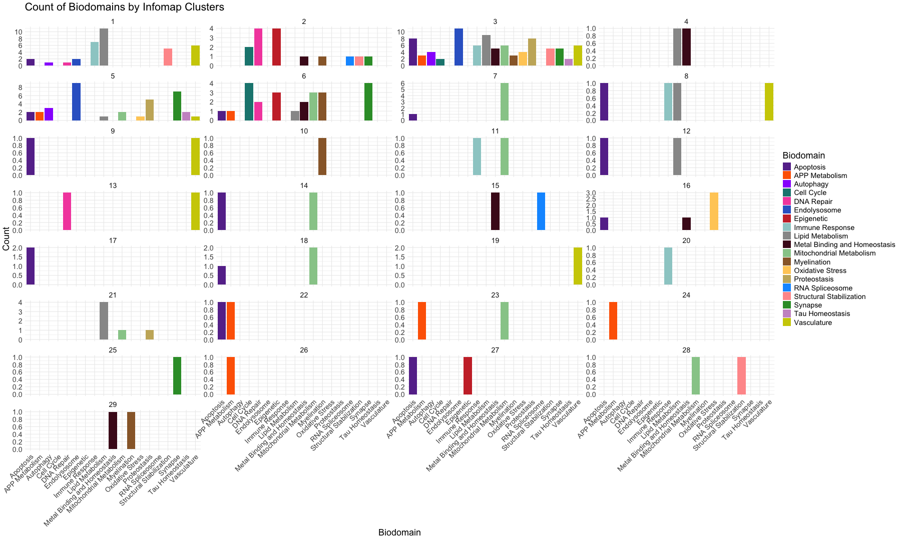
######################################################################################################################################################### # Identify clusters where UP or DOWN subdomains have 5 or more counts # Count the number of UP and DOWN subdomains in each cluster cluster_counts <- infomap_clusters_sds %>% filter(Nodes %in% c("UP", "DOWN")) %>% # Consider only UP and DOWN subdomains group_by(InfoMap_cluster) %>% summarise(Count = n(), .groups = "drop") # Select clusters where UP and DOWN subdomains are 5 or more selected_clusters <- cluster_counts %>% filter(Count >= 5) %>% pull(InfoMap_cluster) # Extract the list of selected clusters # Filter the main dataset for only the selected clusters filtered_data <- infomap_clusters_sds %>% filter(InfoMap_cluster %in% selected_clusters) # Create the bar plot with the filtered data ggplot(filtered_data, aes(x = Biodomain)) + geom_bar(aes(fill = Biodomain)) + # Bar plot with fill by Biodomain labs(title = "Count of Biodomains by Community (Filtered Infomap Clusters)", x = "Biodomain", y = "Count") + facet_wrap(~InfoMap_cluster, scales = "free_y") + # Facet based on selected clusters theme_minimal() + theme(axis.text.x = element_text(angle = 45, hjust = 1, size = 15)) + scale_fill_manual(values = custom_colors) + theme(text = element_text(size = 20)) + scale_y_continuous(breaks = scales::pretty_breaks(n = 5)) # Rounded Y-axis
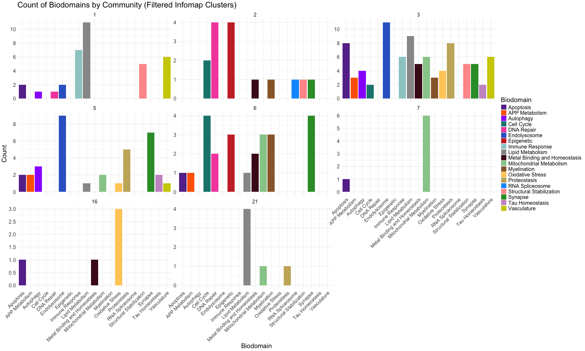